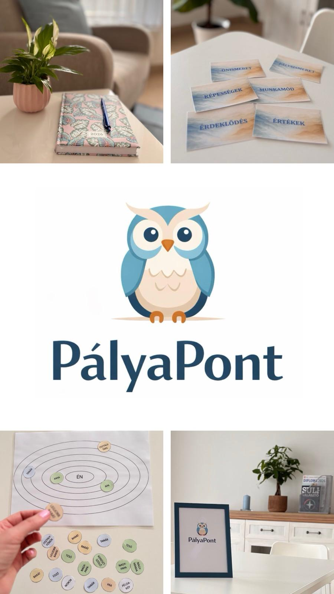

Üdvözlöm a PályaPont oldalán!
Az életpályánk során időről időre olyan döntési helyzetekkel találkozunk, amikor fontos kérdések merülnek fel a tanulással, a munkával vagy a jövőbeli irányokkal kapcsolatban.
A PályaPont célja, hogy ezekben a helyzetekben támogatást nyújtson:
- középiskola-választás előtt
- középiskolai évek alatt (pl. fakultáció)
- felsőoktatási képzési irányok átgondolásakor
- pályamódosítás esetén
- álláskeresés során (pl. önéletrajz, állásinterjú)
Szeretettel várom mindazokat, akik életpályájukkal kapcsolatos kérdéseiket szeretnék nyugodt, kellemes légkörben átgondolni.

Szolgáltatások
Egyéni életpálya-tanácsadás
Több alkalomból álló folyamat, amelynek célja, hogy személyre szabott támogatást nyújtson az életpályával kapcsolatos kérdésekben. Az első lépés a jelenlegi helyzet feltérképezése, ezt követően beszélgetés, valamint különböző önismereti és pályainformációs eszközök segítik a közös munkát.
A részletek és a jelentkezés menete az Egyéni tanácsadás menüpontban érhető el.
Workshopok
Időszakosan meghirdetett alkalmak, amelyek egy-egy témára épülnek, és céljuk, hogy a résztvevők strukturált, csoportos keretek között foglalkozzanak az életpályával kapcsolatos kérdésekkel.
A workshopokkal kapcsolatos információk a Workshopok menüpontban találhatók.